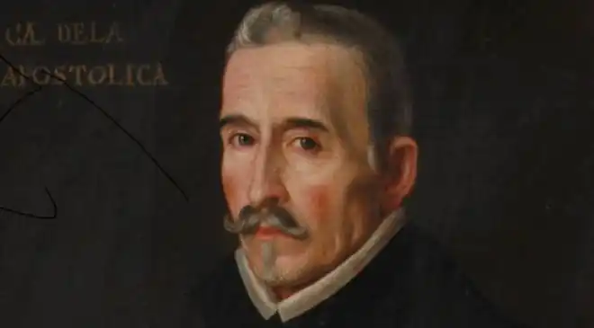
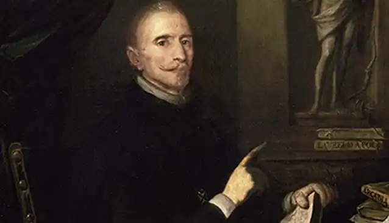

ВЕГА КАРПЙО, Лопе Фелікс де (Vega Carpio, Lope Felix de — 25.11.1562, Мадрид — 27.08.1635, там само) — іспанський письменник.Народився у сім'ї гаптаря. Навчався в університеті Алькала-де-Енарес. З п'яти років віршував. У 22 роки здобув успіх як драматург. Життя Вега Карпйо сповнене пристрасних захоплень і багате на драматичні події.
29 грудня 1587 р. під час спектаклю Вега Карпйо був заарештований і запроторений у в'язницю. Причиною арешту були образливі сатиричні вірші на адресу колишньої коханої Єлени Осоріо та її родини, глава якої Х.Васкес був постановником перших п'єс Вега Карпйо. За рішенням суду Вега Карпйо вислали з Мадрида й Кастилії на багато років. Покидаючи столицю, юнак викрав донью Ісавель де Урбіна й одружився з нею проти волі батька. На вінчанні нареченого представляв родич, позаяк Вега Карпйо у випадку появи в Мадриді загрожувала смертна кара за порушення присуду.
29 травня 1588 р. Вега Карпйо вступив добровольцем на корабель "Сан Хуан" і вирушив у похід "Непереможної Армади". Після багатьох пригод, втрати брата Вега Карпйо повернувся в Іспанію, поселився у Валенсії і видав поему "Краса Анжеліки"("La hermosura de Angelica", 1602). З 1605 p. служив секретарем герцога де Сесса, багато писав для театру. 1610 p., після скасування вироку суду, остаточно переїхав у Мадрид і до кінця життя проживав там. Після смерті своєї першої дружини 1593 р. Вега Карпйо одружився з донькою різника Хуаною де Ґуардо. У ці ж роки пристрасно захопився артисткою Мікаелою де Лухан, оспіваною ним в образі Каміли Люсінди. Багато років поет мандрував услід за коханою й жив там, де вона фала. 1609 р. — завдяки сприянню герцога де Сесса Вега Карпйо отримав звання "наближеного інквізиції" — тобто такого, який перебуває поза підозрою. Це охороняло його від церковних нападок. 1614 p., після загибелі сина (він втопився) і смерті другої дружини, Вега Карпйо прийняв сан священика, але не зрадив своїм світським принципам життя. Церковний сан не перешкодив йому пережити ще раз всепоглинаюче почуття до Марта де Неварес. Від свого кохання Вега Карпйо не відмовився і після того, як Марта осліпла і збожеволіла. 1625 р. — Рада Кастилії заборонила друкувати п'єси Вега Карпйо. 1632 р. — смерть Марти де Неварес. 1634 р. приніс відразу кілька нещасть: помер син, одна з дочок — Марсела — пішла в монастир. Того ж року розпусний дворянин викрав іншу дочку — Антонію-Клару. Нещастя зробили Вега Карпйо цілковито самотнім, але не зламали його духу і не вбили інтересу до життя. За декілька днів до смерті він закінчив поему "Золотий вік"("El siglo de oro", 1635), у якій висловив свою мрію й продовжував утверджувати ренесансний ідеал. М. де Сервантес назвав Вега Карпйо дивом природи. Дійсно, у його творчості іспанський театр досяг своєї досконалості, визначив нове місце іспанській драматургії у світовій літературі. Творчість Вега Карпйо ґрунтується на ідеях ренесансного гуманізму і традиціях патріархальної Іспанії. Вона включає різні жанрові форми: поеми, драми, комедії, сонети, еклоги, пародії і т.д. В.К. належить понад 1500 творів. За назвами дійшло 726 драм і 47 ауто, збереглося 470 текстів п'єс. Письменник активно розробляв поряд з літературними традиціями Ренесансу народні мотиви, теми. Писав прозаїчні романи. У поемах Вега Карпйо проявилася його поетична майстерність, патріотичний дух, прагнення заявити про себе у світі літератури. Він створив близько 20 поем на різноманітні сюжети, включаючи античні. Змагаючись із Л. Аріосто, він розробив епізод з його поеми — історію кохання Анжеліки та Медоро — в поемі "Краса Анжеліки"; сперечаючись із Т. Тассо, написав "Завойований Єрусалим" ("La Jerusalen conquistada", вид. 1609), де оспівав подвиги іспанців у боротьбі за визволення гробу Господнього. Головний герой поеми — король Альфонс VII. Поступово патріотичні настрої поступилися місцем іронії. У поемі "Війна котів" ("La gatomaquia", 1634) поет, з одного боку, через березневі походеньки котів та їхню війну за красуню-кішку висміює сучасні звичаї, з іншого — заперечує штучні норми, прийоми класицистичних поем, створених за книжковими взірцями. У 1609 р. на замовлення Мадридської літературної академії Вега Карпйо написав "Нове мистецтво писати комедії в наш час" ("El arte nuevo de hacer comedias en este tiempo"). До цього часу він вже був автором чудових комедій — "Вчитель танців" ("El maestro del danzar", 1594), "Толедсъка ніч" ("La noche toledana", 1605), "Собака на сіні" ("El perro del hortelano", бл. 1604) і т.д. У поетичному напівжартівливому трактаті Вега Карпйо виклав важливі естетичні принципи і свої погляди на драматургію, спрямовані, з одного боку, проти класицизму, з іншого — проти бароко. Найважливішою засадою естетики Вега Карпйо стають вимоги: "література має йти за життям", "література є не чим іншим, як дзеркалом життя". На думку письменника, мета комедії — відображати життя в усій його різноманітності. Для цього необхідно відкинути геть усі норми й правила. Вега Карпйо стверджував, що в житті комічне і трагічне, низьке і високе переплетені та невіддільні одне від одного, тому не варто говорити окремо в комедії лише про комічне, а в трагедії лише про трагічне. Це неприродно. "Адже і природа красна тим для нас, що крайнощі являє повсякчас". На підставі даного твердження Вега Карпйо виступив проти класицистської вимоги зображати в трагедії королів і аристократів, а в комедії — плебеїв. Вега Карпйо виступив також проти химерної манери гонгористів, вимагаючи "зрозумілої, чистої мови", яка би не відрізнялася від звичайної. Мова повинна індивідуалізувати героя. Саму дію, на думку драматурга, слід вибудовувати так, аби не можна було забрати з п'єси жодного епізоду, жодної її частини. Свої твори Вега Карпйо часто називав "комедіас", хоча перед глядачем проходили і трагедії, і драми, і власне комедії. Зокрема, для драм письменник нерідко запозичував сюжети з іспанської, польської, римської, чеської, італійської, російської історії — "Жорстокий Нерон" ("Neron cruel", вид. 1625), "Життя і смерть короля Бомби" ("La vida у la muerte del rey Bamba", вид. 1604), "Великий князь Московський і гнаний імператор" ("El gran duque de Moscovia y el emperador perseguido", вид. 1617) та ін. Найкращою історичною драмою Вега Карпйо, що стала вершиною пізнього Відродження, є "Фуенте Овехуна" ("Fuente Ovejuna", 1612-1613). Вона була наслідком тривалих роздумів письменника над проблемою взаємин феодала — короля — народу. Частково цю проблему Вега Карпйо розглянув у ранній п'єсі "Періваньєс і командор Оканьї" ("("Peribanez у el comendador de Осаnа", прибл. 1609—1612). У п'єсі селянин Першаньєс, відстоюючи свою честь, вбиває командора. Король визнає правоту простолюдина і прощає йому. Розв'язання конфлікту поки що має ідилічний відтінок. Образи селян поетизовані. Новаторство Вега Карпйо в тому, що він вперше заговорив про почуття честі, властиве не лише для вищої знаті, а й для селян. Тому в п'єсі конфлікт мав уже швидше моральний, аніж політичний характер. Більш об'єктивно конфлікт між селянами та феодалом вирішується саме у "Фуенте Овехуна". Автор об'єднує в одній дії дві історичні події: повстання селян у селищі Фуенте Овехуна і виступ ордену Калатрава у 1476 р. проти короля-католика. Фердинанд та Ізабелла були розумними і прогресивними державцями, котрі зуміли об'єднати країну. Однак Вега Карпйо більшою мірою цікавили взаємини феодала та народу загалом, тому головний конфлікт розгортається в царині моралі. Командор ордену Калатрава Еріон Гомес де Гусман переслідує дівчат селища Фуенте Овехуна, вихваляється своїми перемогами перед їхніми нареченими, батьками. Повертаючись після поразки ордену від королівських військ, він нападає на весільну процесію, оголошує про відродження права феодала на першу шлюбну ніч. Складається враження безкарного розгулу феодальної вольниці. Протистояти насильству і підняти народ на повстання вдається Лауренсії, котра вирвалася від командора. Вона втілює національний дух вольниці, виплеканий у період Реконкісти. Жінка, найбеззахисніша істота, очолює повстання. Селяни вбивають тирана-феодала, щиро вважаючи своїм єдиним паном короля, але водночас чудово розуміють, що монарх не пробачить їм смерті командора. Драматург показує, як селяни в очікуванні рішення короля репетирують тортури. Перед нами вимальовуються навдивовижу живі типи. Це вже не сіра маса. Ми знайомимося з людьми, які мають своє почуття людської гідності, вміють його відстояти. Молодь здатна розмірковувати про кохання в неоплатонічному стилі. На відміну від командора та магістра, котрі зрадили короля, селяни здатні на самопожертву, як, приміром, селянин Менго, який кинувся рятувати Хасинту. Селяни чудово усвідомлюють, що король ближче до феодалів, але хочуть мати одного пана, аби спокійно жити. Вони виявляють дивовижну мужність і згуртованість, коли катують малих і старих. Найвищий героїзм селян проявляється у відповіді на запитання "Хто вбив командора?". Всі відповідали тільки одне: "Фуенте Овехуна". І король змушений пробачити селянам, тому що виявився слабшим. Тему єдності народу Вега Карпйо розробляв у багатьох драмах на іспанські сюжети. Приміром, у п'єсі "Граф Фернан Ґонсалес, або Звільнення Кастилії"("El conde Fernan Gonzalez у la libertad de Castilla", вид. 1625) в центрі — образ легендарного кастильського графа, який відстоює інтереси селян Кастилії від феодалів Наварри та Леона. В.К. створив образ короля, якому народ симпатизує через прагнення останнього домогтися єдиної держави, єдиного центру, що протистояв би надмірним домаганням феодалів. Але, знову повертаючись до проблеми взаємин феодала — короля — народу, Вега Карпйо усвідомлює наївність ідилічних уявлень у розв'язанні конфлікту, як це показано у попередній п'єсі. Невипадково у 1635 р. з'явиться драма "Найкращий алькальд — король" ("El mejor alcalde, el rey"), у якій з реалістичних позицій драматург зобразить, що король стає на бік селян лише тоді, коли феодал відмовляється підкоритися йому. Про моральність короля Вега Карпйо розмірковує у трагедії "Зірка Севільї"("La Estrella de Sevilla", 1623). Конфлікт розгортається між королем, який нехтує людську гідність, і старою Іспанією, що зберігає традиції й живе за законами високої честі.